第15讲 · 微分方程
据《张宇考研数学基础30讲·高等数学分册（2026版）》整理 · 覆盖原书 P419–P450
本讲导读
这一讲是「识别类型」的功夫活：一阶方程五大家族（可分离变量、齐次型、一阶线性、伯努利、全微分）全靠对号入座，二阶常系数靠特征方程加待定系数，数三还要加一小块差分方程（数一另有可降阶与欧拉方程）。考研里这部分位置固定、套路稳定，把每类方程的「第一眼特征」认熟，多数分数是送分的。两件事必须亲手做一遍：一阶线性通解公式的推导（原书反复强调，印P425），待定系数法设特解时「一看二算三比较」的流程（印P432–433）。概念题（不解方程，只用方程本身的信息）近年常考，别轻视第 419–422 页那几段定义——例 15.1、例 15.2 都是「方程本身就是条件」的打法。
原书本讲开篇给了完整的作战地图（印P419）：考题范围为齐次微分方程、一阶线性、伯努利方程（仅数一）、二阶可降阶（仅数一数二）、二阶常系数线性、欧拉方程（仅数一）、几何应用、物理应用（仅数一数二）、差分方程（仅数三），题型选择、填空、解答全有；作者点名的重难点是二阶常系数齐次的求解与欧拉方程。数二数三的同学注意：伯努利方程和欧拉方程考纲不要求，但书上明说「换元法思想」「推导过程」仍应掌握（印P427、印P440）。
站注·真题大数据：一阶线性微分方程属第一梯队（几乎每年必考），二阶常系数线性微分方程属第二梯队（近 15 年出现 10 次以上，高频非必考）；本讲高频题型就是「识别类型 → 套解法」、反求参数/反求方程、以及与几何物理结合的综合大题。
知识框架
- 微分方程的概念（用概念解题）
- 微分方程及其阶：最高阶导数的阶数；常微分方程与（大纲外的）偏微分方程
- 线性微分方程：\(a_n(x)y^{(n)}+\cdots+a_0(x)y=f(x)\)；常系数/变系数、齐次/非齐次的判别
- 解、积分曲线、通解（独立常数个数 = 阶数）、初始条件与特解
- 一阶方程的求解（按类型，对号入座）
- 可分离变量型：直接可分离 \(y'=f(x)g(y)\)；换元后可分离（令 \(u=ax+by+c\)）
- 齐次型：\(\dfrac{dy}{dx}=\varphi\!\left(\dfrac{y}{x}\right)\)，令 \(u=\dfrac{y}{x}\)
- 一阶线性：\(y'+p(x)y=q(x)\)，通解公式（含定积分写法）
- 伯努利方程（仅数学一）：\(\dfrac{dy}{dx}+p(x)y=q(x)y^n\)，令 \(z=y^{1-n}\)
- 全微分方程（仅数学一）：\(\dfrac{\partial Q}{\partial x}=\dfrac{\partial P}{\partial y}\)，凑 \(u(x,y)=C\)
- 换位思考：\(x\) 与 \(y\) 的角色可以互换（例 15.8、例 15.11）
- 高阶线性方程的求解
- 二阶可降阶（仅数一数二）：缺 \(y\) 型 \(y''=f(x,y')\)；缺 \(x\) 型 \(y''=f(y,y')\)；既缺 \(x\) 又缺 \(y\) 按缺 \(y\) 处理
- 二阶常系数齐次：线性无关解的结构 + 特征方程 \(r^2+pr+q=0\) 三种根三种通解
- 二阶常系数非齐次：解的结构（叠加原理、齐通 + 非齐特）+ 待定系数法（一看二算三比较）；书中另附微分算子法
- \(n\ (n>2)\) 阶常系数齐次：按特征根重数写解，是反求方程的理论基础
- 欧拉方程（仅数学一）：\(x^2y''+pxy'+qy=f(x)\)，令 \(x=e^t\)
- 微分方程的应用
- 几何应用：切线斜率、切线在坐标轴上的截距、追踪问题
- 物理应用（仅数一数二）：牛顿第二定律、冷却定律、相关变化率
- 经济应用（数三）
- 一阶常系数线性差分方程（仅数学三）
- 函数差分的定义：\(\Delta y_t=y_{t+1}-y_t\)，\(\Delta^2y_t=y_{t+2}-2y_{t+1}+y_t\)
- 齐次通解 \(y_C(t)=C(-a)^t\)；非齐次通解 = 齐次通解 + 特解；特解设定表
核心概念与定理
一、微分方程的基本概念
表示未知函数及其导数（或微分）与自变量之间关系的方程称为微分方程，一般写成 \(F\left[x,y,y',\cdots,y^{(n)}\right]=0\) 或 \(y^{(n)}=f\left[x,y,y',\cdots,y^{(n-1)}\right]\)。未知函数最高阶导数的阶数叫方程的阶：\(y'''-y''+6y=0\) 是三阶方程，且除 \(y'''\) 外其余各项都可以缺（印P420）。未知函数是一元函数的叫常微分方程；偏微分方程大纲不要求，但少量题目会涉及（印P421 手写注）。
\(n\) 阶线性微分方程指 \(a_n(x)y^{(n)}+a_{n-1}(x)y^{(n-1)}+\cdots+a_1(x)y'+a_0(x)y=f(x)\)（\(a_n(x)\not\equiv 0\)），\(a_k(x)\) 全为常数叫常系数，右端 \(f(x)\equiv 0\) 叫齐次、否则非齐次。解的图形叫积分曲线。通解中独立任意常数的个数等于方程的阶，「独立」指经任何恒等变形都不能使常数个数减少：\(y=C_1\sin x+C_2\cdot 2\sin x=(C_1+2C_2)\sin x\) 只剩一个常数，就不独立（印P421）。初始条件 \(y(x_0)=a_0,\ y'(x_0)=a_1,\cdots,y^{(n-1)}(x_0)=a_{n-1}\) 定出常数后就是特解。注意通解里的常数未必取遍全体实数——例 15.4 的通解里 \(C>0\)，这在概念题里考过（印P421–423）。
二、可分离变量型微分方程
能写成 \(y'=f(x)g(y)\) 的方程直接分离积分：\(\displaystyle\int\frac{dy}{g(y)}=\int f(x)\,dx\)，书里的口诀是「物以类聚，人以群分」（印P422）。另一支是 \(\dfrac{dy}{dx}=f(ax+by+c)\)（\(a,b\) 全不为零）：看不出分离，就令 \(u=ax+by+c\)，则 \(\dfrac{du}{dx}=a+b\dfrac{dy}{dx}=a+bf(u)\)，立刻可分离（印P423）。
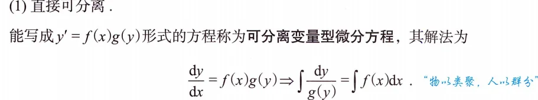
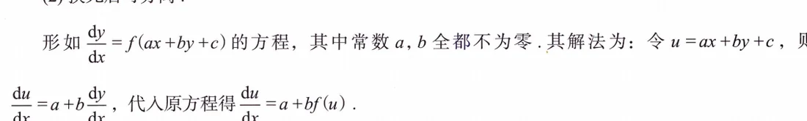
三、齐次型微分方程
形如 \(\dfrac{dy}{dx}=\varphi\!\left(\dfrac{y}{x}\right)\) 的方程。令 \(u=\dfrac{y}{x}\)，即 \(y=ux\)，则 \(\dfrac{dy}{dx}=u+x\dfrac{du}{dx}\)，方程变为 \(u+x\dfrac{du}{dx}=\varphi(u)\)，分离变量得 \(\dfrac{du}{\varphi(u)-u}=\dfrac{dx}{x}\)（印P424）。识别特征：右端整体是 \(\frac{y}{x}\) 的函数（齐次函数之比），比如 \(\sqrt{x^2+y^2}\) 配上 \(xy\) 这种组合。
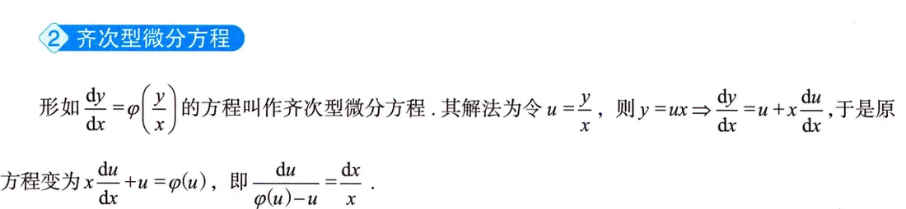
四、一阶线性微分方程与通解公式
形如 \(y'+p(x)y=q(x)\)（\(p(x),q(x)\) 连续）的方程，通解公式是本讲第一个必须默写的公式：
\[y=e^{-\int p(x)dx}\left[\int q(x)\,e^{\int p(x)dx}\,dx+C\right].\]
推导只有一步：两边同乘 \(e^{\int p(x)dx}\)，左端凑成 \(\left[e^{\int p(x)dx}\cdot y\right]'\)，再两边积分。原书在这里专门停下来劝大家：「请大家一定要掌握该公式的推导过程，这是一个很好的锻炼机会，不要错过」（印P424）。两个细节（印P425 注）：其一，若 \(\int p(x)dx=\ln|\varphi(x)|\)，则 \(e^{\int p(x)dx}=\pm\varphi(x)\)，\(\pm\) 可并入任意常数，故可不加绝对值；但其他计算中出现 \(\ln u\) 且 \(u\) 不知正负时，一律加绝对值。其二，研究解的周期性、有界性、极限时，用变限积分（定积分）写通解更方便：
\[y=e^{-\int_{x_0}^{x}p(t)dt}\left[\int_{x_0}^{x}q(t)\,e^{\int_{x_0}^{t}p(s)ds}\,dt+C\right].\]
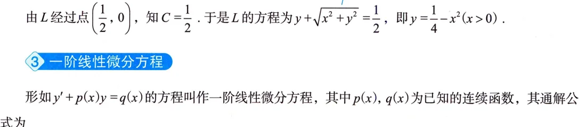
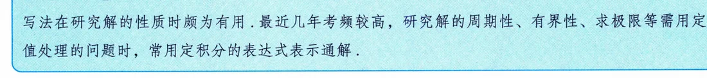
五、伯努利方程（仅数学一）
\(\dfrac{dy}{dx}+p(x)y=q(x)y^{\,n}\ (n\neq 0,1)\)。三步：两边乘 \(y^{-n}\)；令 \(z=y^{1-n}\)，则 \(\dfrac{dz}{dx}=(1-n)y^{-n}\dfrac{dy}{dx}\)；方程化为 \(\dfrac{dz}{dx}+(1-n)p(x)z=(1-n)q(x)\)，解此一阶线性再回代（印P427）。数二数三考纲不作要求，但书上注明这种「换元降次」的思想应会（印P427）。
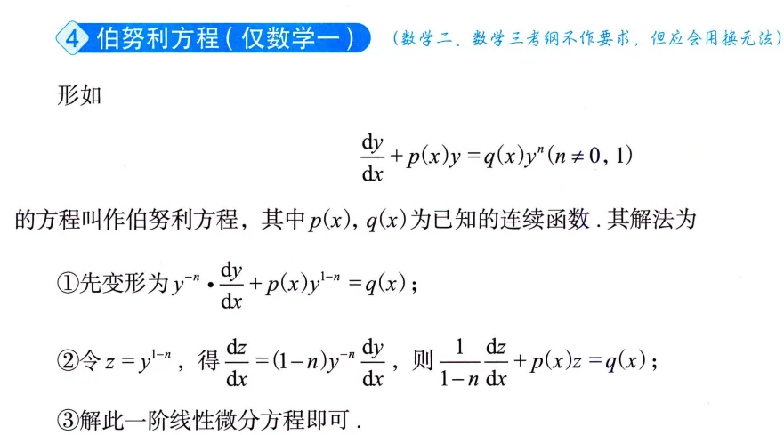
六、二阶可降阶微分方程（仅数学一、数学二）
两类换元，书页边手写注概括为「赶尽杀绝 / 斩草除根」（印P428）：
- 缺 \(y\) 的 \(y''=f(x,y')\) 型：令 \(y'=p(x)\)，\(y''=p'\)，原方程化为 \(p'=f(x,p)\) 的一阶方程；解出 \(p=\varphi(x,C_1)\) 后再积分一次得 \(y=\int\varphi(x,C_1)dx+C_2\)。
- 缺 \(x\) 的 \(y''=f(y,y')\) 型：令 \(y'=p(y)\)，此时 \(y''=\dfrac{dp}{dy}\cdot\dfrac{dy}{dx}=p\dfrac{dp}{dy}\)（绝不能写成 \(p'\)，否则变成含 \(x,y,p\) 三个变量的方程，做不下去）；解出 \(p=\psi(y,C_1)\) 后由 \(\dfrac{dy}{dx}=\psi\) 分离积分。
- 既缺 \(x\) 又缺 \(y\) 的 \(y''=f(y')\) 型：按缺 \(y\) 处理（印P429）。
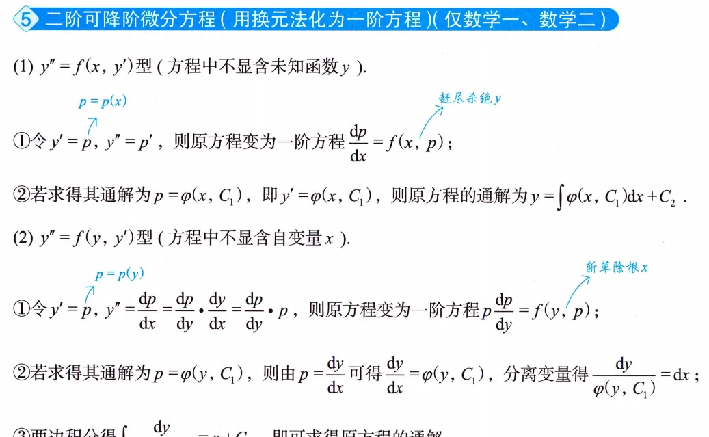
七、全微分方程（仅数学一）
若 \(P(x,y),Q(x,y)\) 在单连通区域 \(D\) 上有一阶连续偏导数，且 \(\dfrac{\partial Q}{\partial x}=\dfrac{\partial P}{\partial y}\)，则 \(P(x,y)dx+Q(x,y)dy=0\) 的左端是某个二元函数 \(u(x,y)\) 的全微分，方程叫全微分方程，通解就是 \(u(x,y)=C\)（印P430）。解题通常凑微分：把左端凑成 \(d(xy),d\!\left(\frac{y}{x}\right),d(\ln xy)\) 这类组合。例 15.14 反着用：先由全微分条件定出 \(f(x)\)，再凑通解。
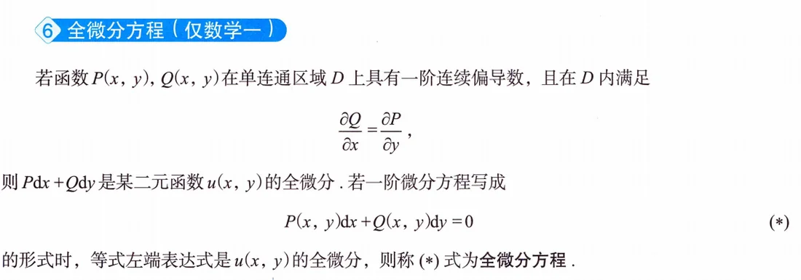
八、二阶常系数齐次：解的结构
\(y''+py'+qy=0\)（\(p,q\) 为常数）。若 \(\dfrac{y_1(x)}{y_2(x)}\not\equiv C\)（常数），称 \(y_1,y_2\) 线性无关，则 \(y=C_1y_1+C_2y_2\) 是通解（印P430）。判线性无关最快的方法就是看比值是否为常数——这直接决定了通解里两个解必须「长得不一样」。
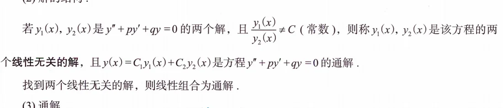
九、二阶常系数齐次：特征方程与三种通解
令 \(y=e^{rx}\) 代入方程得 \(e^{rx}(r^2+pr+q)=0\)，特征方程为 \(r^2+pr+q=0\)。三种根对应三种通解（印P430–431）：\(p^2-4q>0\) 两个不等实根 \(r_1\neq r_2\)，\(y=C_1e^{r_1x}+C_2e^{r_2x}\)；\(p^2-4q=0\) 二重根 \(r_1=r_2=r\)，\(y=(C_1+C_2x)e^{rx}\)；\(p^2-4q<0\) 共轭复根 \(\alpha\pm\beta i\)，\(y=e^{\alpha x}(C_1\cos\beta x+C_2\sin\beta x)\)。
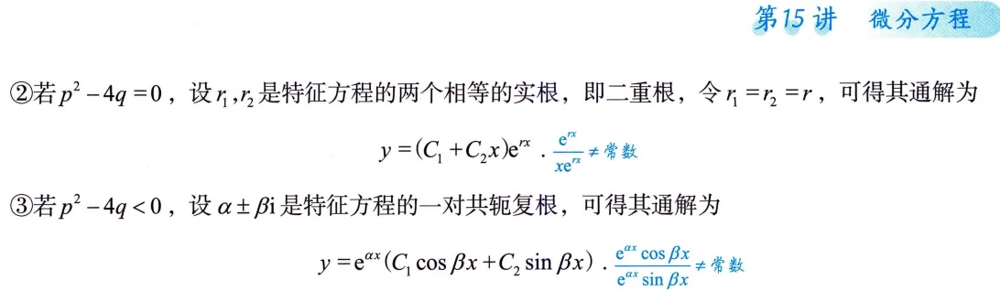
书里顺带给两条解的性质（印P431 注）：解中含 \(e^{rx}\)，则 \(r>0\) 时在 \(x\to+\infty\) 无界、\(r<0\) 时在 \(x\to-\infty\) 无界；解具有周期性时必 \(e^{\alpha x}=1\) 即 \(\alpha=0\)，而 \(\cos\beta x,\sin\beta x\) 均有界。讨论解的有界性、周期性的概念题就从这两条下手。
十、二阶常系数非齐次：解的结构
\(y''+py'+qy=f(x)\)（\(f(x)\not\equiv 0\)），\(f(x)\) 叫自由项。两条结构（印P432）：其一（叠加原理），若 \(y_1\) 是 \(y''+py'+qy=f_1\) 的解、\(y_2\) 是 \(y''+py'+qy=f_2\) 的解，则 \(y_1+y_2\) 是 \(y''+py'+qy=f_1+f_2\) 的解；其二，若 \(y_1,y_2\) 都是非齐次方程的特解，则 \(y_1-y_2\) 是对应齐次方程的解。再配合「非齐通 = 齐通 + 非齐特」（印P436 (4)），大题的骨架就齐了。
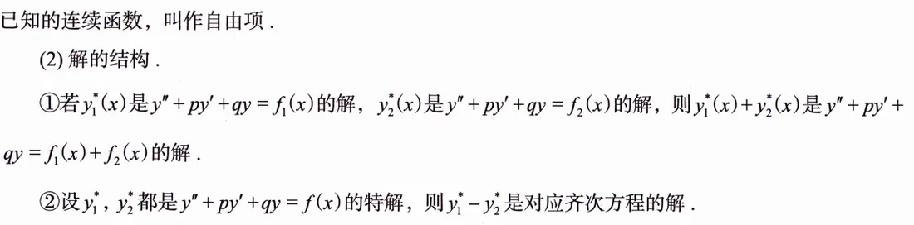
十一、非齐次特解设定（一）：指数型自由项
大纲只考两类自由项。第一类 \(f(x)=P_n(x)e^{\alpha x}\)：设 \(y^*=e^{\alpha x}Q_n(x)x^k\)，其中 \(Q_n(x)\) 是与 \(P_n(x)\) 同次的一般多项式，\(k\) 看 \(\alpha\) 与特征根的关系：不是特征根取 0，是单特征根取 1，是二重特征根取 2（印P432）。张宇的口诀「一看（自由项中的 \(\alpha\)），二算（\(r_{1,2}\)），三比较（定 \(k\)）」就是印P432–433 的总结，设特解前必须过一遍这个流程，忘乘 \(x^k\) 是最高频的计算事故。
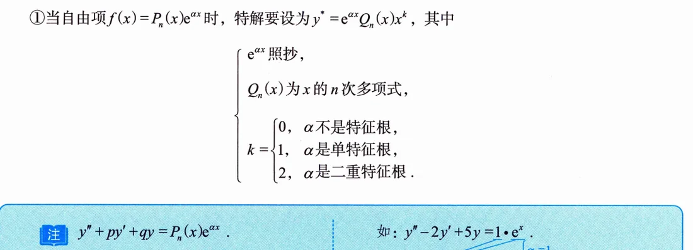
十二、非齐次特解设定（二）：三角型自由项
第二类 \(f(x)=e^{\alpha x}\left[P_m(x)\cos\beta x+P_n(x)\sin\beta x\right]\)：设 \(y^*=e^{\alpha x}\left[Q_l^{(1)}(x)\cos\beta x+Q_l^{(2)}(x)\sin\beta x\right]x^k\)，其中 \(l=\max\{m,n\}\)，两个 \(Q_l\) 是两个不同的 \(l\) 次多项式（都取最高次写全），\(k\) 看 \(\alpha\pm\beta i\) 是否为特征根：不是取 0，是取 1（印P432–433）。注意即使自由项只有 \(\cos\) 没有 \(\sin\)，特解也要 \(\cos\beta x\)、\(\sin\beta x\) 两项都设——求导会交叉产生它们。
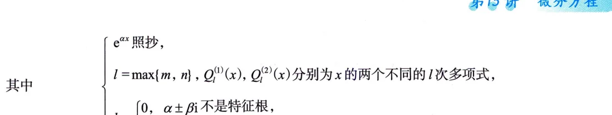
十三、微分算子法（书注方法）
书注 2 介绍了另一条求特解的路（印P433）：记 \(\mathbf D=\dfrac{d}{dx}\)，方程写成 \(F(\mathbf D)y=f(x)\)（\(F(\mathbf D)=\mathbf D^2+p\mathbf D+q\)，满足多项式运算规则），特解 \(y^*=\dfrac{1}{F(\mathbf D)}f(x)\)；约定 \(\dfrac1{\mathbf D}\) 表示积分（取 \(C=0\)），如 \(\dfrac1{\mathbf D}\sin x=-\cos x\)。四类规则配注例 1–9：
- \(e^{\alpha x}\) 型：\(\dfrac{1}{F(\mathbf D)}e^{\alpha x}=\dfrac{e^{\alpha x}}{F(\alpha)}\)（\(F(\alpha)\neq 0\)）；若 \(F(\alpha)=0\) 而 \(F'(\alpha)\neq0\)，得 \(y^*=\dfrac{xe^{\alpha x}}{F'(\alpha)}\)；再不行用 \(F''(\alpha)\)（注例 1–3）。
- \(\cos\beta x,\sin\beta x\) 型：把 \(\mathbf D^2\) 换成 \(-\beta^2\) 代入分母；分母为零时（共振）结果是乘 \(x\) 的公式（注例 4–6）。
- 多项式型：把 \(\dfrac{1}{F(\mathbf D)}\) 展开成 \(\mathbf D\) 的泰勒级数，取到多项式次数为止（注例 7）。
- \(e^{\alpha x}v(x)\) 型：把 \(e^{\alpha x}\) 先移到最前面，\(\mathbf D\) 换成 \(\mathbf D+\alpha\) 再算（注例 8–9）。
原书点评很中肯（印P437）：待定系数法易设出形式、计算量大；算子法计算量小、要记的形式多——两法二选一用顺手即可。顺带一提，书里还讲了段掌故：算子法是英国物理学家海维赛德在 19 世纪末提出的，当年被数学家批评「不全面、不严谨」，作者拿费曼在积分号下求导作类比——工具先用起来，严谨性另说（印P433）。
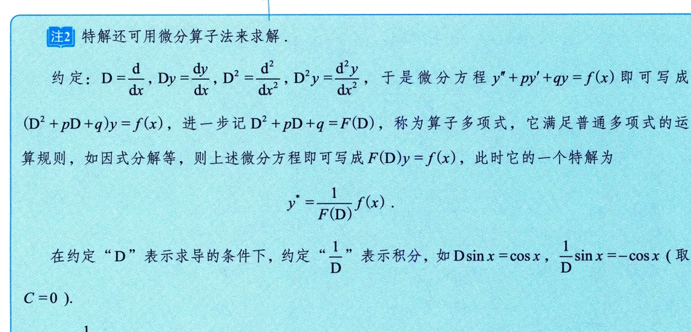
十四、\(n\ (n>2)\) 阶常系数齐次与反求方程
按特征根「重数」写解（印P438，一般不超过三重）：\(r\) 为单实根写 \(Ce^{rx}\)；\(k\) 重实根写 \((C_1+C_2x+\cdots+C_kx^{k-1})e^{rx}\)；单复根 \(\alpha\pm\beta i\) 写 \(e^{\alpha x}(C_1\cos\beta x+C_2\sin\beta x)\)；二重复根写 \(e^{\alpha x}\left[(C_1+C_3x)\cos\beta x+(C_2+C_4x)\sin\beta x\right]\)。反过来用就是反求方程的理论基础，四条注（印P438）：解中含 \(e^{rx}\) 则 \(r\) 至少单根；含 \(x^{k-1}e^{rx}\) 则 \(r\) 至少 \(k\) 重；含 \(e^{\alpha x}\cos\beta x\)（或 \(\sin\beta x\)）则 \(\alpha\pm\beta i\) 至少单复根；含 \(xe^{\alpha x}\cos\beta x\)（或 \(\sin\beta x\)）则 \(\alpha\pm\beta i\) 至少二重复根。
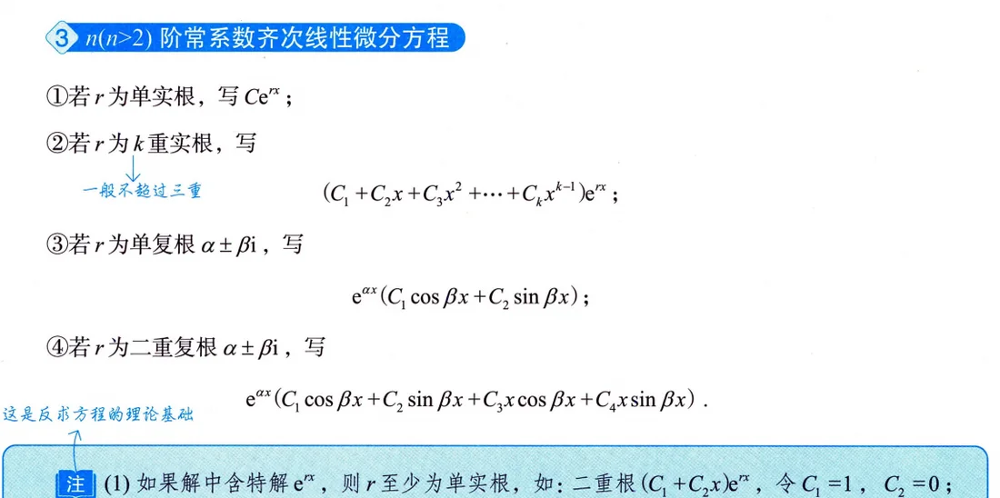
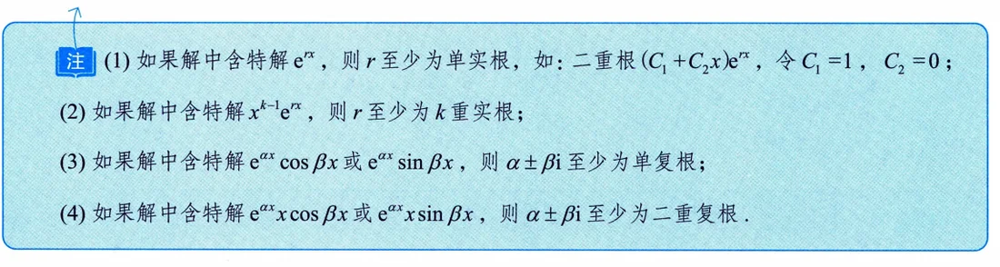
十五、欧拉方程（仅数学一）
形如 \(x^2\dfrac{d^2y}{dx^2}+px\dfrac{dy}{dx}+qy=f(x)\) 的方程（\(p,q\) 为常数），有固定解法（印P439）。\(x>0\) 时令 \(x=e^t\)（\(t=\ln x\)），利用复合函数求导可得 \(x\dfrac{dy}{dx}=\dfrac{dy}{dt}\)，\(x^2\dfrac{d^2y}{dx^2}=\dfrac{d^2y}{dt^2}-\dfrac{dy}{dt}\)，方程化为常系数的 \(\dfrac{d^2y}{dt^2}+(p-1)\dfrac{dy}{dt}+qy=f(e^t)\)；\(x<0\) 时令 \(x=-e^t\) 同理。解完别忘了 \(t=\ln x\) 回代成 \(x\) 的函数（印P440 特别强调）。书注建议考生自己写一遍推导；数二数三不考欧拉方程，但推导思想应掌握（印P440）。
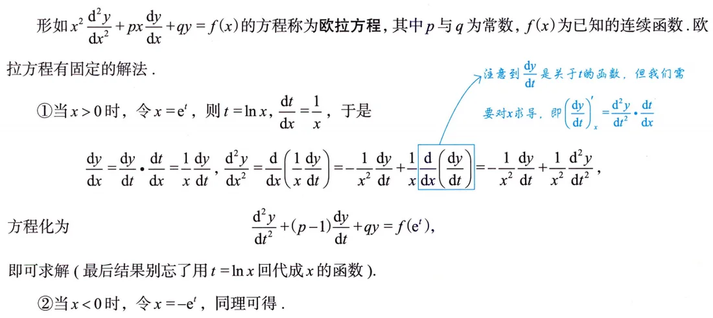
十六、微分方程的几何应用
几何应用的核心武器还是第 3 讲的切线（印P440）：过 \(P(x_0,y_0)\) 的切线 \(Y-y_0=y'(X-x_0)\)，令 \(X=0\) 得 \(y\) 轴截距 \(y_0-x_0y'\)，令 \(Y=0\) 得 \(x\) 轴截距 \(x_0-\dfrac{y_0}{y'}\)——「切线在坐标轴上的截距」类问题（例 15.6、习题 15.13）全靠这两条翻译。书里还讲了个达·芬奇自行车的追踪问题（印P440–441）：前后轮轨迹哪条是前轮？轨迹上每点的切线方向代表此刻前进方向，后轮每一刻的前进方向必然指向前轮此刻的位置，据此判前轮，再由前后轮轨迹连线长度不变判断行驶方向——这是切线概念最好的应用题素材。追踪问题的建模句式：追击点到被追击点的连线，始终为追击点轨迹在该点的切线方向（例 15.21）。
十七、微分方程的物理应用（仅数学一、数学二）
两套最常用的物理翻译（印P441–443）：牛顿第二定律 \(m\dfrac{dv}{dt}=\) 合力（例 15.22 减速伞，阻力 \(-kv\)）；牛顿冷却定律 \(\dfrac{dT}{dt}=-k(T-T_0)\)（例 15.23，\(T>T_0\) 时温度下降故带负号）。列方程时盯紧两件事：比例系数 \(k\) 不是已知量，最后要用初值表出；加速度需要时可写成 \(\dfrac{dv}{dt}=\dfrac{dv}{dx}\cdot\dfrac{dx}{dt}=v\dfrac{dv}{dx}\)（相关变化率），题目问什么就往哪个变量组合靠。
十八、一阶常系数线性差分方程（仅数学三）
函数 \(y_t=f(t)\)（\(t=0,\pm1,\pm2,\cdots\)）的一阶差分 \(\Delta y_t=y_{t+1}-y_t=f(t+1)-f(t)\)，二阶差分 \(\Delta^2y_t=\Delta(\Delta y_t)=y_{t+2}-2y_{t+1}+y_t\)（印P443）。一阶常系数线性差分方程 \(y_{t+1}+ay_t=f(t)\)（\(a\) 为非零常数）：\(f\equiv 0\) 时是齐次方程，通解为 \(y_C(t)=C(-a)^t\)（由迭代加数学归纳法得到）；非齐次通解 = 齐次通解 + 非齐次一个特解（定理 1），自由项叠加时特解也叠加（定理 2）。特解设定表（印P444）与微分方程的待定系数法逻辑一致：\(f(t)=d^tP_m(t)\) 时设 \(y^*=d^tQ_m(t)\)，若 \(a+d=0\) 则乘 \(t\) 设 \(y^*=t\,d^tQ_m(t)\)；\(f(t)=b_1\cos\omega t+b_2\sin\omega t\) 时设 \(y^*=\alpha\cos\omega t+\beta\sin\omega t\)，套 \(D\) 公式，\(D=0\)（共振）时乘 \(t\)。
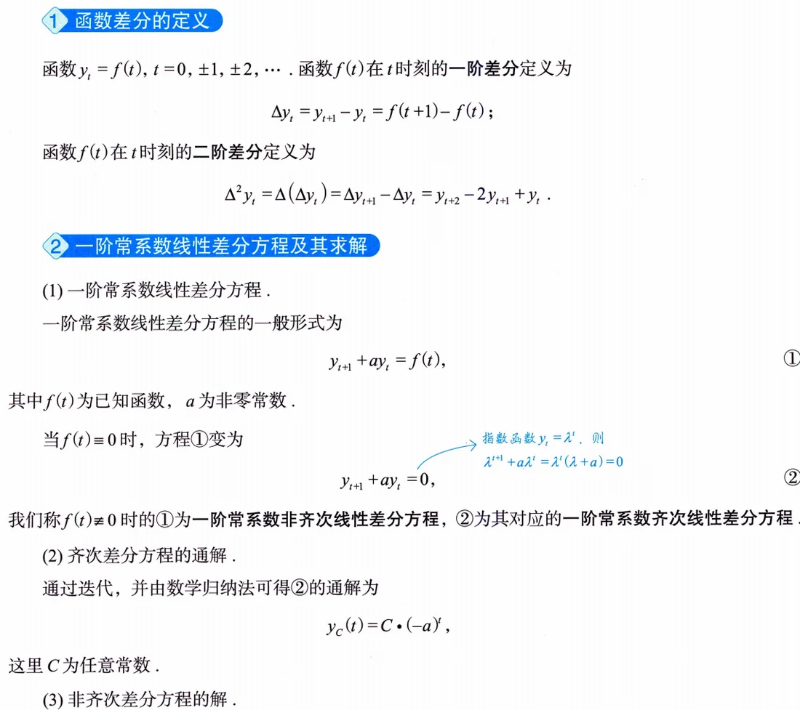
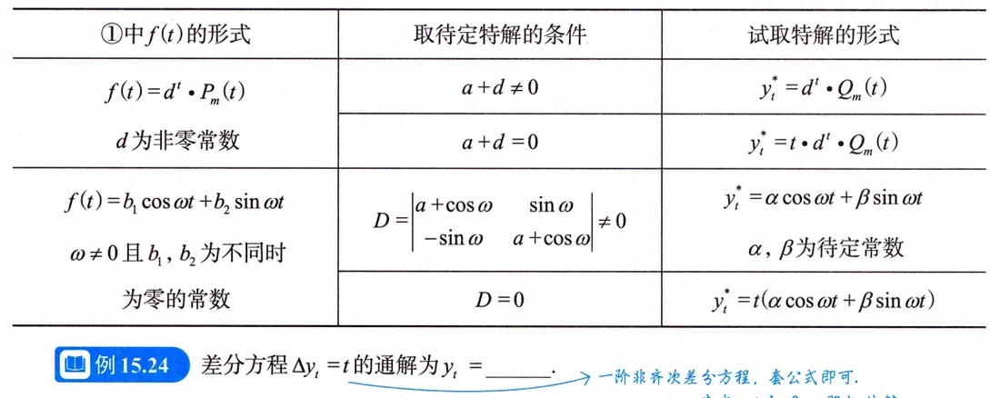
典型例题精讲
例15.1 概念题：不解方程判断极值（印P421）
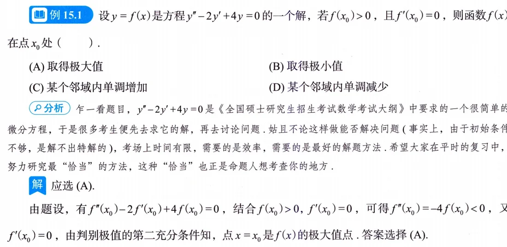
思路 设 \(y=f(x)\) 是 \(y''-2y'+4y=0\) 的解，\(f(x_0)>0\)，\(f'(x_0)=0\)，问 \(x_0\) 处的极值情况。很多人的第一反应是解方程——初始条件不够根本解不出特解，而且完全没必要：方程本身就是条件，把 \(x=x_0\) 代进去。 要点 由 \(f''(x_0)-2f'(x_0)+4f(x_0)=0\) 得 \(f''(x_0)=-4f(x_0)<0\)，又 \(f'(x_0)=0\)，由极值第二充分条件，\(x_0\) 是极大值点，选 (A)。 注 微分方程的解任意阶可导，所以 \(f''\) 可以随便用——这类「不解方程」的概念题近年常考，考场上先想方程本身给的信息。
例15.2 概念题：用初始条件算极限（印P422）
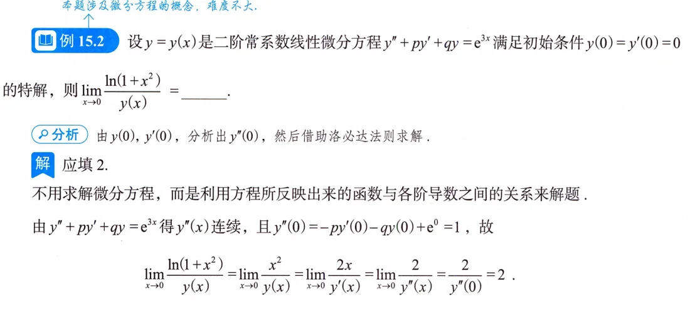
思路 \(y=y(x)\) 是 \(y''+py'+qy=e^{3x}\) 满足 \(y(0)=y'(0)=0\) 的特解，求 \(\lim\limits_{x\to0}\dfrac{\ln(1+x^2)}{y(x)}\)。照样不解方程：由 \(y(0),y'(0)\) 先分析出 \(y''(0)\)，再洛必达。 要点 代 \(x=0\)：\(y''(0)+py'(0)+qy(0)=e^0=1\)，故 \(y''(0)=1\)。于是 \[\lim_{x\to0}\frac{\ln(1+x^2)}{y(x)}=\lim_{x\to0}\frac{x^2}{y(x)}=\lim_{x\to0}\frac{2x}{y'(x)}=\lim_{x\to0}\frac{2}{y''(x)}=\frac{2}{y''(0)}=2.\] 注 书中点评：不用求解微分方程，而是利用方程反映出的函数与各阶导数之间的关系来解题。
例15.3 建立方程：切线斜率条件（印P422）
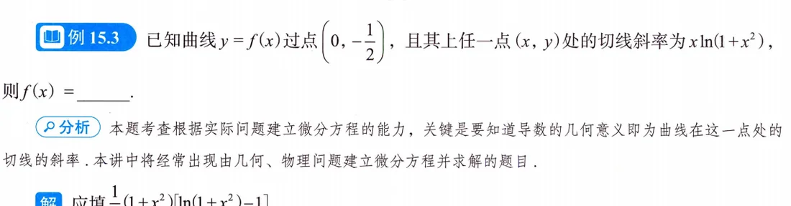
思路 已知曲线 \(y=f(x)\) 过点 \((0,-\frac12)\)，且任一点处切线斜率为 \(x\ln(1+x^2)\)，求 \(f(x)\)。考「由实际问题建立微分方程」：导数的几何意义就是切线斜率，直接写 \(f'(x)=x\ln(1+x^2)\)。 要点 分离变量积分：\(f(x)=\displaystyle\int x\ln(1+x^2)\,dx\)，令 \(u=1+x^2\) 得 \(\frac12\int\ln u\,du=\frac12(u\ln u-u)+C\)，故 \(f(x)=\frac12(1+x^2)\left[\ln(1+x^2)-1\right]+C\)。代入 \(f(0)=-\frac12\) 得 \(C=0\)，即 \(f(x)=\frac12(1+x^2)\left[\ln(1+x^2)-1\right]\)。 注 「学会将几何表达翻译成数学表达式」是本讲应用题的第一课（印P422 手写注）。
例15.4 可分离变量：常数怎么写好合并（印P423）
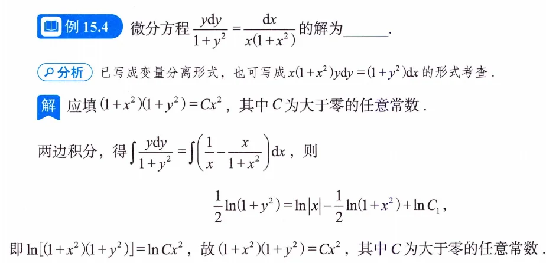
思路 方程 \(\dfrac{y\,dy}{1+y^2}=\dfrac{dx}{x(1+x^2)}\) 已是变量分离形式（也可写成 \(x(1+x^2)y\,dy=(1+y^2)dx\)),两边积分即可；难点在积分后常数怎么写才好合并。 要点 \(\displaystyle\int\frac{y\,dy}{1+y^2}=\int\left(\frac1x-\frac{x}{1+x^2}\right)dx\)，得 \(\frac12\ln(1+y^2)=\ln|x|-\frac12\ln(1+x^2)+\ln C_1\)，合并为 \((1+x^2)(1+y^2)=Cx^2\)，其中 \(C\) 为大于零的任意常数。 注 原书特意提醒（印P423 注）：积分后常数写 \(\ln C\) 便于合并；通解中的常数指一定范围内任意取值（这里 \(C>0\)），不必取遍全体实数。
例15.5 换元后可分离与奇解（印P423–424）
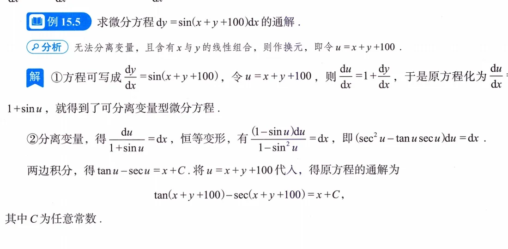
思路 求 \(\dfrac{dy}{dx}=\sin(x+y+100)\) 的通解。无法分离且含 \(x,y\) 的线性组合，令 \(u=x+y+100\)。 要点 \(\dfrac{du}{dx}=1+\sin u\)，分离变量 \(\dfrac{du}{1+\sin u}=dx\)。分子分母同乘 \(1-\sin u\)：\(\dfrac{(1-\sin u)\,du}{\cos^2u}=dx\)，两边积分得 \(\tan u-\sec u=x+C\)，回代即 \(\tan(x+y+100)-\sec(x+y+100)=x+C\)。 注 本题的注是全书重要注之一（印P424）：分离变量时默认了 \(\sin u\neq -1\)，丢掉了 \(1+\sin u=0\) 的解——奇解 \(x+y+100=2k\pi-\frac{\pi}{2}\)（\(k=0,\pm1,\pm2,\cdots\)）。大纲只要求通解不要求全部解；记住结论：非线性方程全部解 = 通解 + 奇解，线性方程全部解 = 通解。
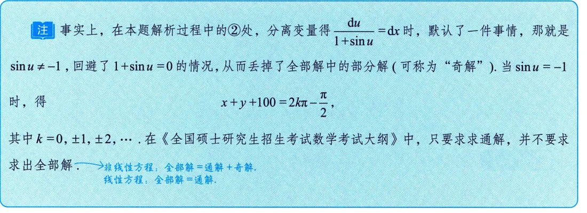
例15.6 几何应用：距离等于切线截距（印P424）
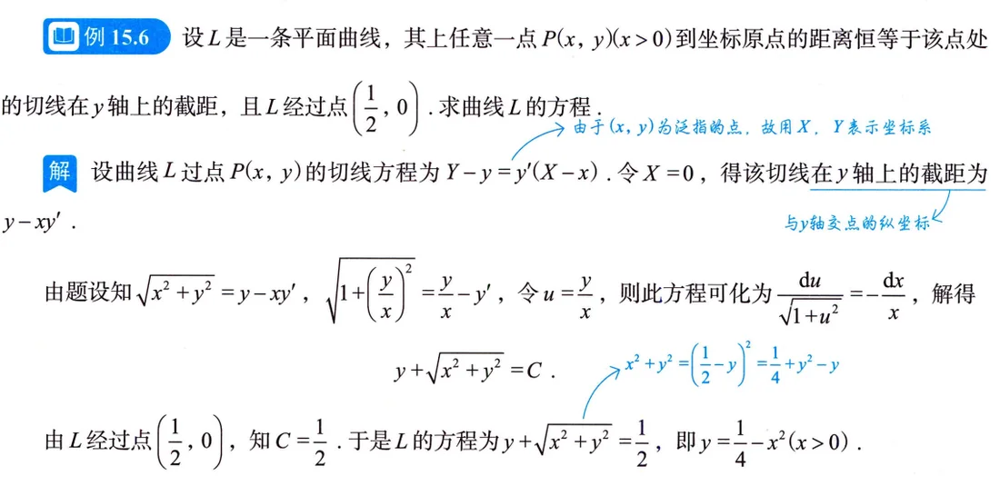
思路 曲线 \(L\) 上任一点 \(P(x,y)\)（\(x>0\)）到原点的距离恒等于该点切线在 \(y\) 轴上的截距，且 \(L\) 过 \((3,0)\)，求 \(L\)。设过 \(P\) 的切线 \(Y-y=y'(X-x)\)，令 \(X=0\) 得截距 \(y-xy'\)；「距离 = 截距」即 \(\sqrt{x^2+y^2}=y-xy'\)。 要点 右端是 \(\frac{y}{x}\) 的组合，令 \(u=\frac{y}{x}\)：\(y-xy'=-x^2\dfrac{du}{dx}\)，方程化为 \(x\sqrt{1+u^2}=-x^2u'\)，分离积分得 \(\ln\left(u+\sqrt{1+u^2}\right)=-\ln x+\ln C\)，整理成 \(y+\sqrt{x^2+y^2}=C\)。代入 \((3,0)\) 得 \(C=3\)，即 \(y+\sqrt{x^2+y^2}=3\)，解出 \(y=\dfrac{9-x^2}{6}\ (x>0)\)。 注 由于 \((x,y)\) 是泛指的点，写切线方程时用 \(X,Y\) 表示坐标系（印P424 手写注）——避免把切线上的动点与曲线上的定点搞混。
例15.7 一阶线性公式 + 面积（印P425–426）
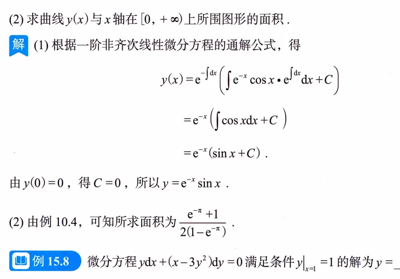
思路 \(y+y'=e^{-x}\cos x\) 满足 \(y(0)=0\)。(1) 求 \(y(x)\)；(2) 求曲线与 \(x\) 轴在 \([0,+\infty)\) 上所围面积。标准公式法，\(p(x)=1\)，\(q(x)=e^{-x}\cos x\)。 要点 \(y=e^{-x}\left(\int\cos x\,dx+C\right)=e^{-x}(\sin x+C)\)，由 \(y(0)=0\) 得 \(C=0\)，故 \(y=e^{-x}\sin x\)。面积借助例 10.4 的结果为 \(\dfrac{e^{-\pi}+1}{2(1-e^{-\pi})}\)。 注 \(\int p\,dx=x\)，连绝对值都不用纠结——公式用熟了就是送分题。
例15.8 换位思考：x 看成 y 的函数（印P426）
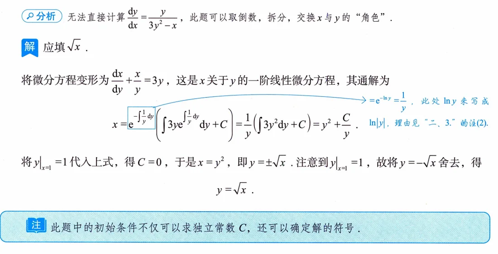
思路 \(y\,dx+(x-3y^2)dy=0\) 满足 \(y|_{x=1}=1\)。直接算 \(\frac{dy}{dx}\) 很难看，原书的招是「换位思考」：取倒数、拆分，把 \(x\) 看成 \(y\) 的函数，方程变成 \(\dfrac{dx}{dy}-\dfrac{x}{y}=-3y\)（一阶线性，以 \(y\) 为自变量）。 要点 \[x=e^{-\int\frac{dy}{y}}\left[\int (-3y)\,e^{\int\frac{dy}{y}}dy+C\right]=\frac1y\left[\int -3y^2\,dy+C\right]=y^2+\frac{C}{y}.\] 由 \(y|_{x=1}=1\) 得 \(C=0\)，即 \(x=y^2\)，\(y=\pm\sqrt{x}\)；初值 \(y=1>0\) 舍去负支，答 \(y=\sqrt{x}\)。 注 初始条件不仅定 \(C\)，还能确定解的符号（印P426 注）。
例15.9 重点题型：解的极限（印P426–427）
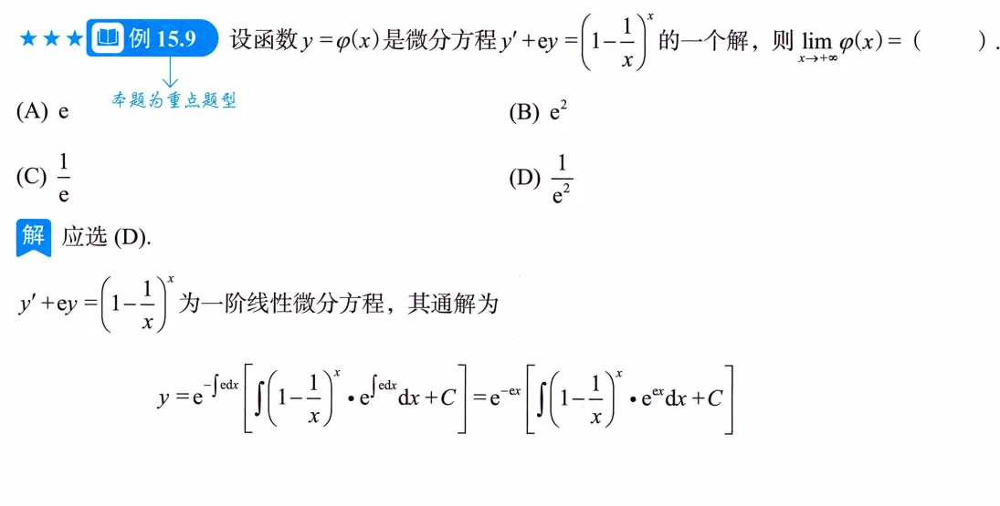
思路 ★★★原书标注的重点题型。\(\varphi(x)\) 是 \(y'+ey=\left(1-\dfrac1x\right)^{x}\) 的解，求 \(\lim\limits_{x\to+\infty}\varphi(x)\)。直接积不出分，套路是通解写成变限积分形式（印P425 注），分母提出 \(e^{ex}\) 后洛必达。 要点 通解为 \(\displaystyle y=\frac{\int_{x_0}^{x}\left(1-\frac1t\right)^{t}e^{et}dt+C}{e^{ex}}\)（\(x_0\) 为任意正实数），于是 \[\lim_{x\to+\infty}y=\lim_{x\to+\infty}\frac{\left(1-\frac1x\right)^{x}e^{ex}}{e\cdot e^{ex}}=\frac{e^{-1}}{e}=\frac1{e^2},\] 选 (D)。 注 分子用了重要极限 \(\left(1-\frac1x\right)^x\to e^{-1}\)。凡研究解的周期性、有界性、极限的题，优先想定积分写法（印P425 说这类问题「最近几年考频较高」）。
例15.10 证明解有界（印P427）
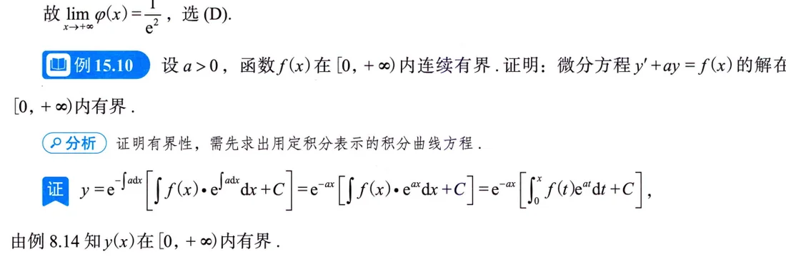
思路 \(a>0\)，\(f(x)\) 在 \([0,+\infty)\) 连续有界，证明 \(y'+ay=f(x)\) 的解在 \([0,+\infty)\) 内有界。证明有界性，需先写出用定积分表示的解。 要点 \[y=e^{-ax}\left[\int_0^x f(t)\,e^{at}dt+C\right].\] 设 \(|f(t)|\le M\)，则 \(|y|\le e^{-ax}\left[M\int_0^x e^{at}dt+|C|\right]=\dfrac{M(1-e^{-ax})}{a}+|C|e^{-ax}\le \dfrac{M}{a}+|C|\)，有界（原书引用第 8 讲例 8.14 的变限积分结论）。 注 这是例 15.9 同一思想的证明题版本：定积分写法 + 放缩。
例15.11 伯努利 + 换位思考（印P427–428）
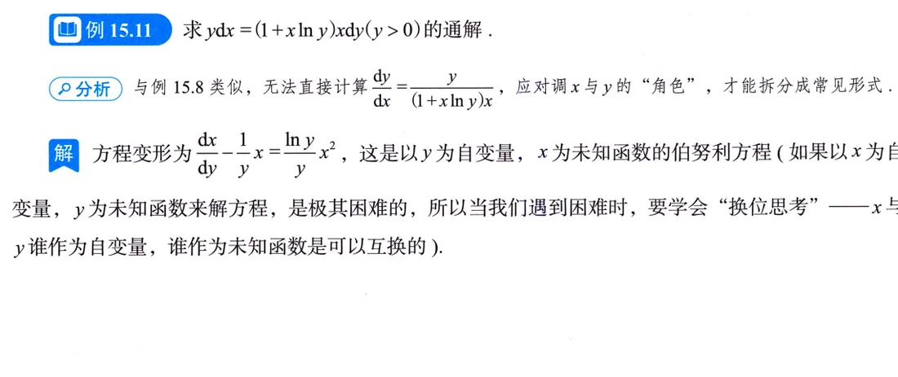
思路 求 \(y\,dx=(1+x\ln y)x\,dy\ (y>0)\) 的通解。以 \(x\) 为自变量、\(y\) 为未知函数极难解；对调角色，以 \(y\) 为自变量：\(\dfrac{dx}{dy}-\dfrac{x}{y}=\dfrac{\ln y}{y}\cdot x^2\)，是以 \(y\) 为自变量的伯努利方程（\(n=2\)）。 要点 两边乘 \(x^{-2}\)，令 \(z=\dfrac1x\)，则 \(\dfrac{dz}{dy}+\dfrac1y z=-\dfrac{\ln y}{y}\)，一阶线性：\(z=\dfrac1y\left[-\int\ln y\,dy+C\right]=\dfrac1y\left[-y\ln y+y+C\right]\)。故通解为 \(\dfrac1x=1-\ln y+\dfrac{C}{y}\)（\(y>0\)，\(C\) 为任意常数）。 注 原书在这里再次强调：遇到困难时要学会「换位思考」——\(x\) 与 \(y\) 谁作自变量、谁作未知函数是可以互换的（印P428）。
例15.12 可降阶：既缺 x 又缺 y（印P428–429）
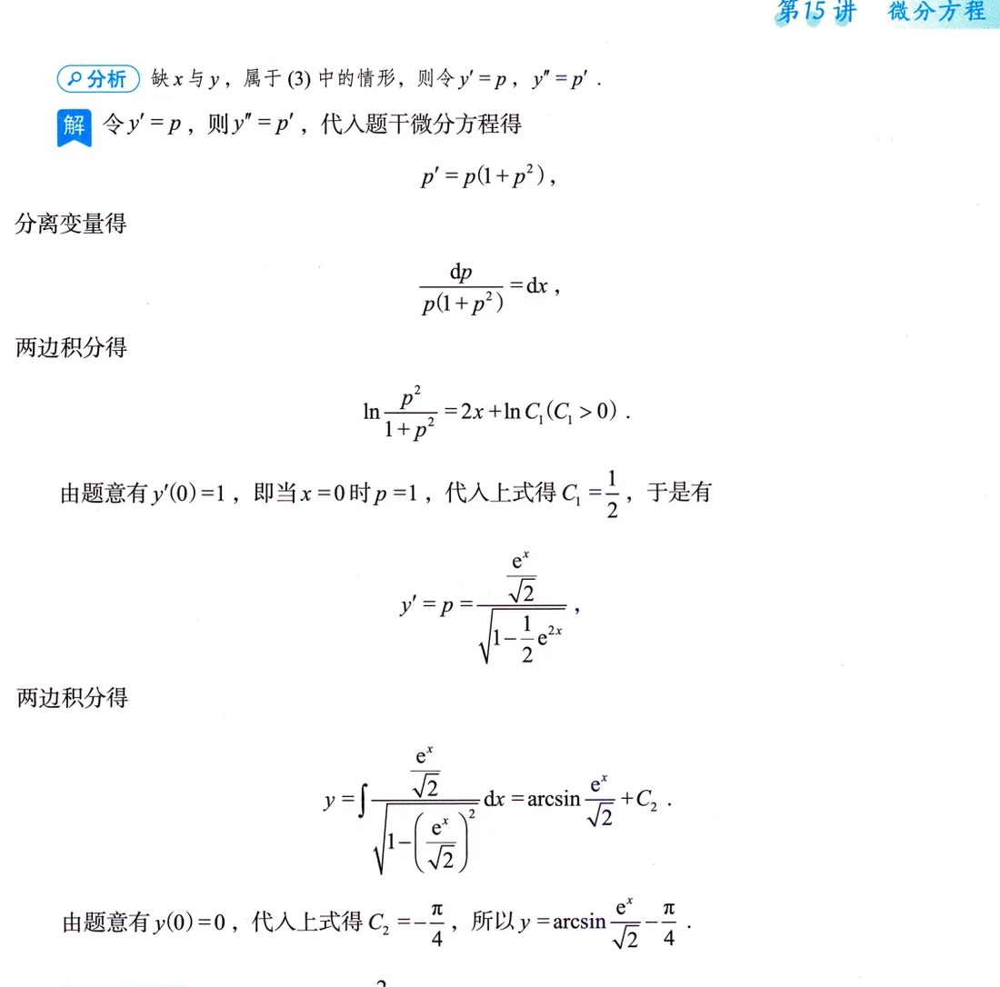
思路 \(y''=y'[1+(y')^2]\)，\(y(0)=0\)，\(y'(0)=1\)，求特解。既缺 \(x\) 又缺 \(y\)，按缺 \(y\) 处理：令 \(y'=p(x)\)，\(y''=p'\)。 要点 \(p'=p(1+p^2)\)，分离积分得 \(\ln\dfrac{p^2}{1+p^2}=2x+\ln C_1\)；提前用 \(x=0,p=1\) 定出 \(C_1=\dfrac12\)，解出 \(p=\dfrac{e^x/\sqrt2}{\sqrt{1-\frac12e^{2x}}}\)，再积分 \(y=\arcsin\dfrac{e^x}{\sqrt2}+C_2\)，由 \(y(0)=0\) 得 \(C_2=-\dfrac\pi4\)。特解 \(y=\arcsin\dfrac{e^x}{\sqrt2}-\dfrac\pi4\)。 注 中途就把 \(y'(0)=1\) 代进去定 \(C_1\)，比解完通解再联立两个方程省力。习题 15.12 的曲线方程最后也归到这题。
例15.15 可降阶：缺 x 型与丢解（印P429–430）
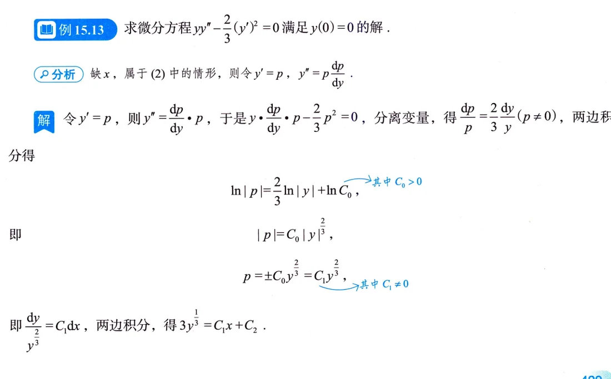
思路 求 \(yy''+(y')^2=0\) 满足 \(y(0)=0\) 的解。缺 \(x\)，令 \(y'=p(y)\)，\(y''=p\dfrac{dp}{dy}\)。 要点 代入得 \(yp\dfrac{dp}{dy}+p^2=0\)。默认 \(p\neq0\) 时约去 \(p\)：\(y\dfrac{dp}{dy}=-p\)，分离变量 \(\dfrac{dp}{p}=-\dfrac{dy}{y}\)，积分得 \(\ln|p|=-\ln|y|+\ln C_1\)，即 \(p=\dfrac{C_1}{y}\)。于是 \(y\,dy=C_1\,dx\)，积分得 \(\dfrac12y^2=C_1x+C_2\)。代入 \(y(0)=0\) 得 \(C_2=0\)，特解 \(y^2=2C_1x\)（含 \(C_1=0\) 时的 \(y\equiv0\)）。别漏检验丢解：约去 \(p\) 时丢掉了 \(p\equiv0\) 即 \(y=\text{常数}\)，由 \(y(0)=0\) 得 \(y\equiv0\)——它恰含在 \(C_1=0\) 的情形里。
例15.16 全微分方程：先反求 f(x)（印P430）
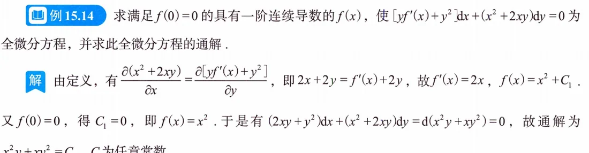
思路 求满足 \(f(0)=0\) 的具有一阶连续导数的 \(f(x)\)，使 \(\left[yf'(x)+y^2\right]dx+(x^2+2xy)dy=0\) 为全微分方程，并求通解。全微分条件 \(\dfrac{\partial Q}{\partial x}=\dfrac{\partial P}{\partial y}\) 先定 \(f\)。 要点 \(\dfrac{\partial}{\partial x}(x^2+2xy)=2x+2y\)，\(\dfrac{\partial}{\partial y}\left[yf'(x)+y^2\right]=f'(x)+2y\)，二者相等得 \(f'(x)=2x\)，\(f(x)=x^2+C\)，由 \(f(0)=0\) 得 \(f(x)=x^2\)。于是 \((2xy+y^2)dx+(x^2+2xy)dy=d(x^2y+xy^2)\)，通解 \(x^2y+xy^2=C\)（\(C\) 为任意常数）。 注 全微分条件的两边偏导各消掉一个变量，这类「反求函数」的题就是靠这个特点切进去的。
例15.17 二阶齐次 + 极值条件（印P431）
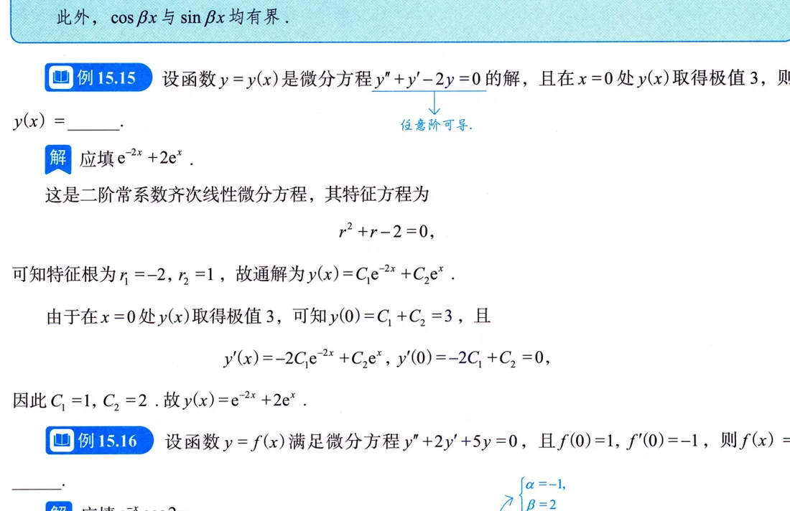
思路 \(y=y(x)\) 是 \(y''+y'-2y=0\) 的解，且在 \(x=0\) 处取得极值 3，求 \(y(x)\)。特征方程 \(r^2+r-2=0\)，\(r_1=-2\)，\(r_2=1\)，通解 \(C_1e^{-2x}+C_2e^x\)。条件「在 \(x=0\) 处取得极值 3」要翻译成两句话：\(y(0)=3\) 且 \(y'(0)=0\)。 要点 \(y(0)=C_1+C_2=3\)，\(y'(0)=-2C_1+C_2=0\)，解得 \(C_1=1\)，\(C_2=2\)，故 \(y=e^{-2x}+2e^x\)。 注 极值点条件永远是「函数值 + 一阶导为零」两条；微分方程任意阶可导，所以 \(y''\) 可以随便用（例 15.1 同理）。
例15.18 二阶齐次：共轭复根（印P431）
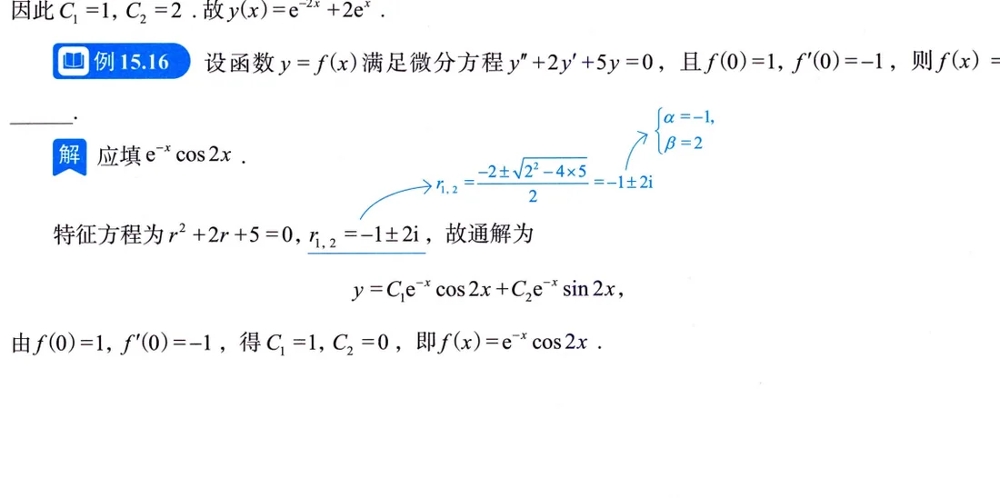
思路 \(y''+2y'+5y=0\)，\(f(0)=1\)，\(f'(0)=-1\)，求 \(f(x)\)。特征方程 \(r^2+2r+5=0\)，判别式 \(4-20<0\)，复根情形。 要点 \(r_{1,2}=\dfrac{-2\pm\sqrt{4-20}}{2}=-1\pm2i\)，\(\alpha=-1\)，\(\beta=2\)，通解 \(y=e^{-x}(C_1\cos2x+C_2\sin2x)\)。代入 \(f(0)=1\) 得 \(C_1=1\)，\(f'(0)=-1\) 得 \(C_2=0\)，即 \(f(x)=e^{-x}\cos2x\)。 注 复根情形的 \(\alpha,\beta\) 就藏在 \(r=\alpha\pm\beta i\) 里，初值代入时 \(e^{-x}\) 求导产生的交叉项别漏。
例15.19 非齐次：待定系数法 vs 算子法（印P436–437）
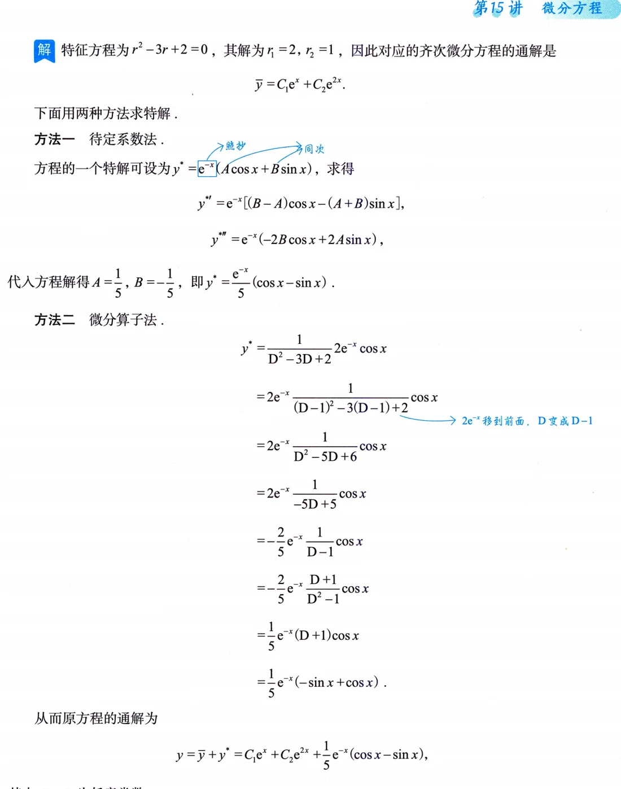
思路 求 \(y''-3y'+2y=2e^{-x}\cos x\) 的通解。特征根 \(r=1,2\)；自由项的 \(\alpha\pm\beta i=-1\pm i\) 不是特征根，\(k=0\)，设 \(y^*=e^{-x}(A\cos x+B\sin x)\)。书中用待定系数法与微分算子法各做一遍。 要点 待定系数法：求导代入比较系数得 \(A=\dfrac15\)，\(B=-\dfrac15\)。算子法：把 \(2e^{-x}\) 移到最前面（\(\mathbf D\) 换成 \(\mathbf D-1\)），逐层化简到同一结果。通解 \[y=C_1e^{x}+C_2e^{2x}+\frac15e^{-x}(\cos x-\sin x).\] 注 原书点评：待定系数法易设出形式、计算量大，建议作为练习完整书写；算子法计算量小、要记的形式多（印P437）。
例15.20 反求参数：特解形状的排除法（印P437–438）
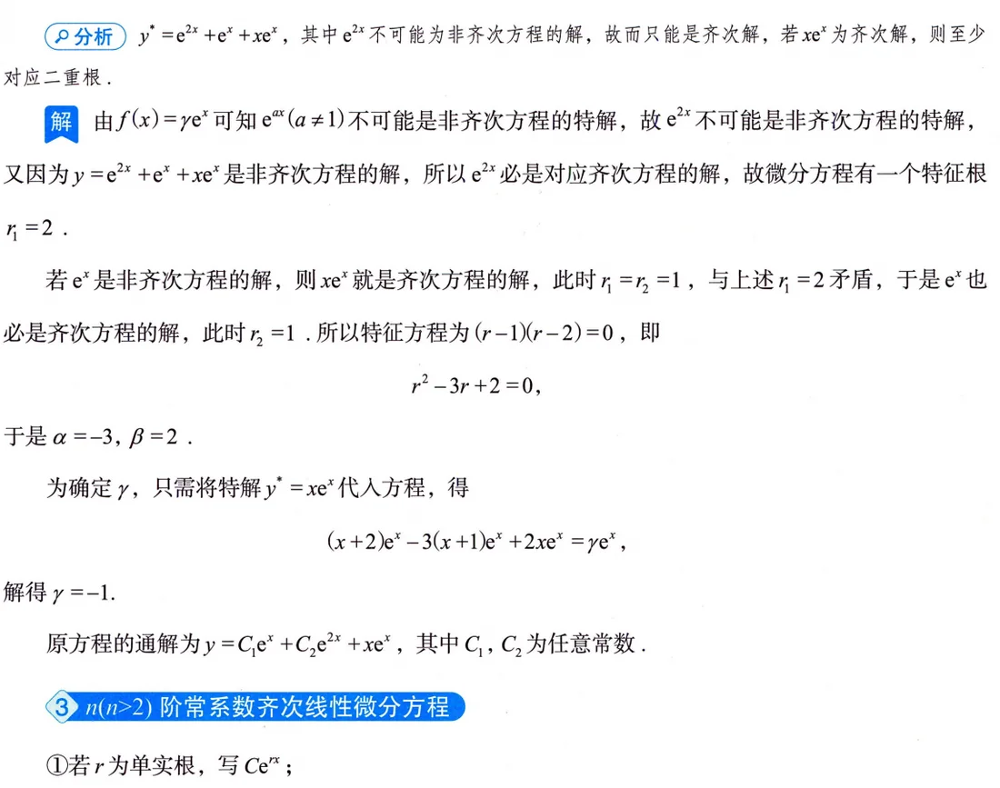
思路 \(y''+\alpha y'+\beta y=\gamma e^x\) 有一个特解 \(y^*=e^{2x}+(1+x)e^x\)，求 \(\alpha,\beta,\gamma\) 及通解。命门在「哪些项只能是齐次解」：自由项只有 \(e^x\)，所以特解里不可能出现 \(e^{2x}\)，它必是齐次解，得 \(r=2\)。 要点 又若 \(e^x\) 是非齐次特解，则 \(xe^x\) 是齐次解，推出 \(r_1=r_2=1\)，与 \(r=2\) 矛盾——故 \(e^x\) 也是齐次解。特征方程 \((r-1)(r-2)=0\)，即 \(r^2-3r+2=0\)，\(\alpha=-3\)，\(\beta=2\)；再把 \(y^*=xe^x\) 代入方程得 \(\gamma=-1\)。通解 \(y=C_1e^{x}+C_2e^{2x}+xe^x\)。 注 非齐次特解的形状受自由项限制，反求参数的题全靠这一点切进去。
例15.21 反求方程：四阶齐次（印P438–439）
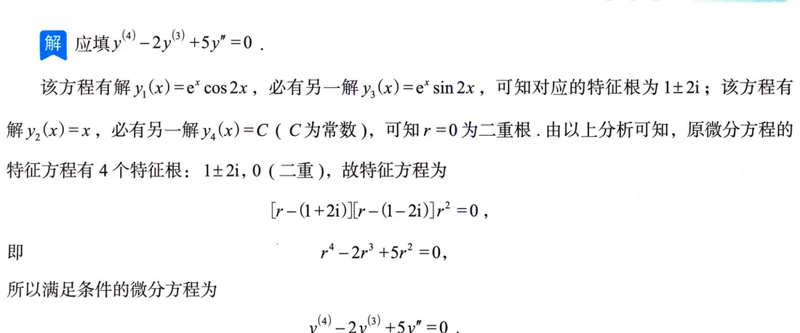
思路 某四阶常系数齐次线性方程有特解 \(y_1(x)=e^x\cos2x\)，\(y_2(x)=x\)，且 \(y^{(4)}\) 前的系数为 1，求该方程。用「解 → 特征根 → 特征方程 → 微分方程」的反推链。 要点 有解 \(e^x\cos2x\)，必有另一解 \(e^x\sin2x\)，特征根 \(1\pm2i\)；有解 \(x\)，必有另一解常数（\(r=0\) 单根），而 \(x\) 与 \(1\) 都是 \(r=0\) 对应的解，说明 \(r=0\) 是二重根。四个特征根：\(1\pm2i\)，\(0\)（二重），特征方程 \([r-(1+2i)][r-(1-2i)]\cdot r^2=0\)，展开 \(r^4-2r^3+5r^2=0\)，方程为 \(y^{(4)}-2y^{(3)}+5y''=0\)。 注 手写旁注点破两条：\(e^x\cos2x\) 至少为单复根，\((C_1+C_2x)e^{0\cdot x}\) 至少为 2 重根（印P438）。
例15.22 欧拉方程（印P439–440）
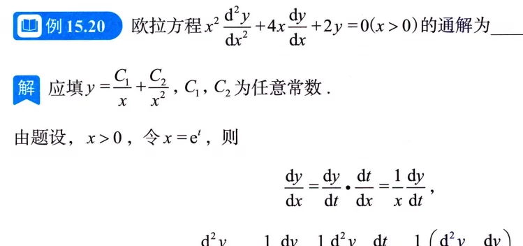
思路 \(x^2y''+4xy'+2y=0\ (x>0)\)，令 \(x=e^t\) 化常系数。 要点 \(x\dfrac{dy}{dx}=\dfrac{dy}{dt}\)，\(x^2\dfrac{d^2y}{dx^2}=\dfrac{d^2y}{dt^2}-\dfrac{dy}{dt}\)，原方程化为 \(\dfrac{d^2y}{dt^2}+3\dfrac{dy}{dt}+2y=0\)，特征根 \(r=-1,-2\)，\(y=C_1e^{-t}+C_2e^{-2t}\)，回代 \(t=\ln x\) 得 \(y=\dfrac{C_1}{x}+\dfrac{C_2}{x^2}\)。 注 通解必须是 \(x\) 的函数，回代这步最容易丢（印P440 顶的手写批注就在喊这件事）。
例15.23 几何应用：追踪问题（印P440–441）
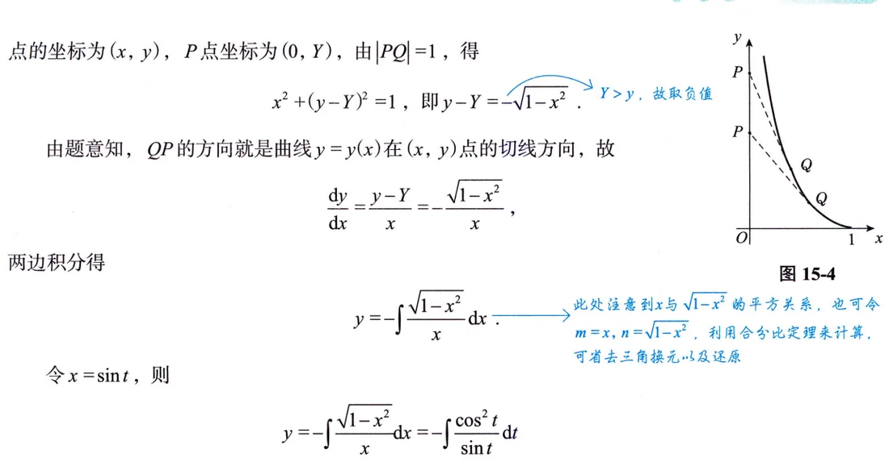
思路 自行车前后轮触地点 \(P,Q\) 满足 \(|PQ|=1\)，初始 \(P\) 在原点、\(Q\) 在 \((1,0)\)，前轮沿 \(y\) 轴正向前进，求 \(Q\) 的轨迹。建模三句话：\(Q(x,y)\)，\(P(0,Y)\)，由 \(|PQ|=1\) 得 \(x^2+(y-Y)^2=1\)，\(Y>y\) 故 \(y-Y=-\sqrt{1-x^2}\)；\(QP\) 的方向就是 \(Q\) 轨迹在该点的切线方向。 要点 \[\frac{dy}{dx}=\frac{Y-y}{0-x}=-\frac{\sqrt{1-x^2}}{x}.\] 积分（令 \(x=\sin t\)，中途用二倍角公式化简 \(\int\frac{\cos^2t}{\sin t}dt\)）：\(y=\ln|\csc t+\cot t|-\cos t+C\)，回代并由 \(x=1\) 时 \(y=0\) 得 \(C=0\)，轨迹方程 \[y=\ln\frac{1+\sqrt{1-x^2}}{x}-\sqrt{1-x^2}\quad(0<x\le1).\] 注 书中手写注：追击的点到被追击点的连线始终为该点的切线方向（印P441）。积分时也可令 \(m=x,n=\sqrt{1-x^2}\) 用合分比定理省去三角换元（印P441 注）。
例15.24 物理应用：减速伞（印P441–442）
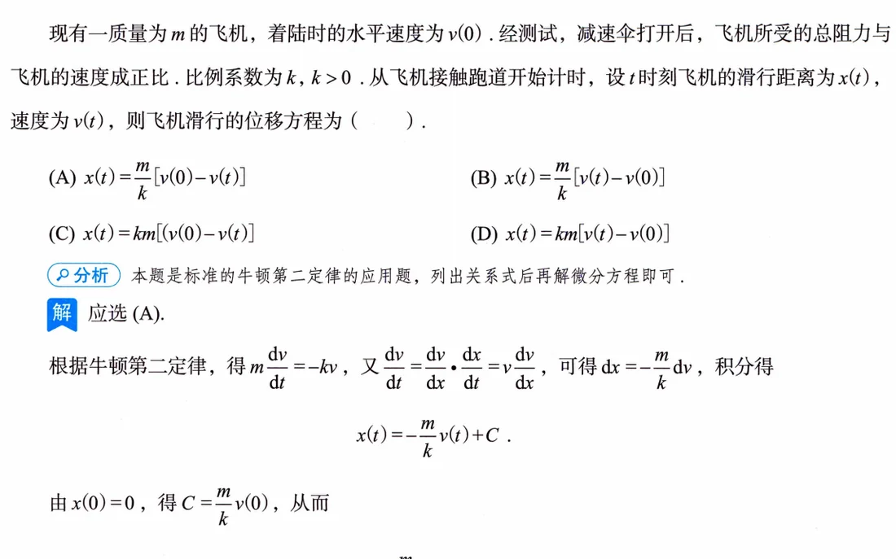
思路 质量为 \(m\) 的飞机着陆速度 \(v_0\)，减速伞阻力与速度成正比（系数 \(k>0\)），\(t\) 时刻滑行距离 \(x(t)\)、速度 \(v(t)\)，问位移方程。标准的牛顿第二定律应用题。 要点 \(m\dfrac{dv}{dt}=-kv\)。选项都是 \(x\) 与 \(v\) 的关系式，故用相关变化率把加速度写成 \(\dfrac{dv}{dt}=\dfrac{dv}{dx}\cdot\dfrac{dx}{dt}=v\dfrac{dv}{dx}\)：\[m\,v\frac{dv}{dx}=-kv\ \Rightarrow\ m\,dv=-k\,dx\ \Rightarrow\ x(t)=-\frac{m}{k}v(t)+C.\] 由 \(x(0)=0\) 得 \(C=\dfrac{m}{k}v(0)\)，故 \(x(t)=\dfrac{m}{k}\left[v(0)-v(t)\right]\)，选 (A)。 注 「不用考虑实际意义」的手写注指：中间步骤两边除以 \(v\) 等形式操作不必纠结物理含义，盯住目标形式即可（印P442）。
例15.25 物理应用：冷却定律（印P442–443）
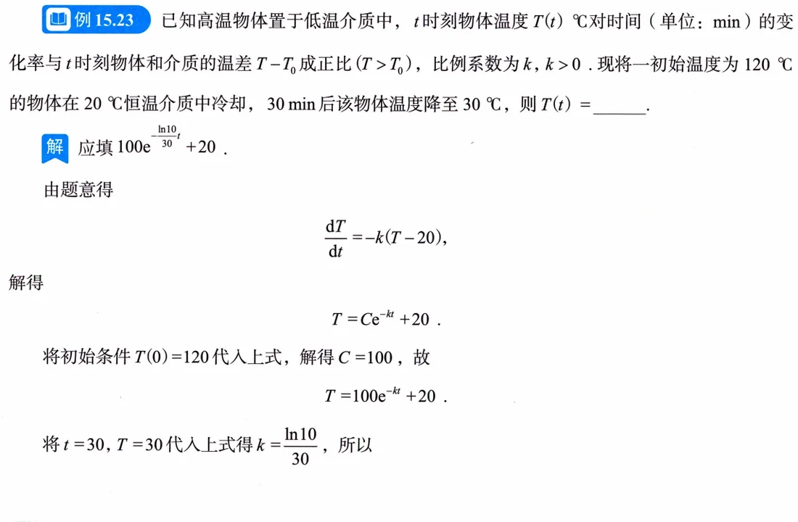
思路 物体温度 \(T(t)\) 对时间的变化率与温差 \(T-T_0\) 成正比（\(T>T_0\)），初始 120℃ 的物体在 20℃ 恒温介质中冷却，30 min 后降至 30℃，求 \(T(t)\)。翻译方程时盯紧符号：温度下降，\(\dfrac{dT}{dt}<0\)。 要点 \(\dfrac{dT}{dt}=-k(T-20)\)，解得 \(T=Ce^{-kt}+20\)。由 \(T(0)=120\) 得 \(C=100\)；由 \(T(30)=30\) 得 \(100e^{-30k}+20=30\)，\(k=\dfrac{\ln10}{30}\)。故 \[T(t)=100\,e^{-\frac{\ln10}{30}t}+20.\] 注 原书注两条（印P443）：\(k\) 不是已知量，最后应代入初值表出；「变化率与温差成正比（\(T>T_0\)）」要写成 \(\dfrac{dT}{dt}=-k(T-T_0)\)，负号表示温度随时间增加而降低。
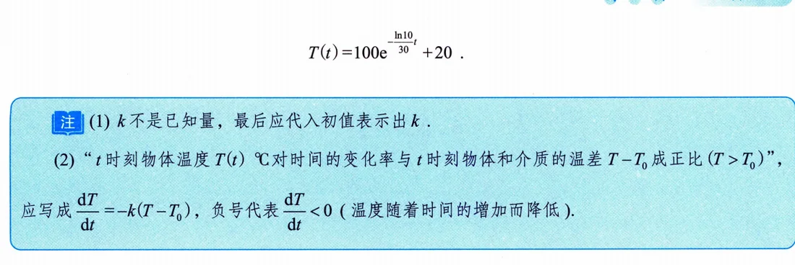
例15.26 差分方程：a+d=0 乘 t（印P444）
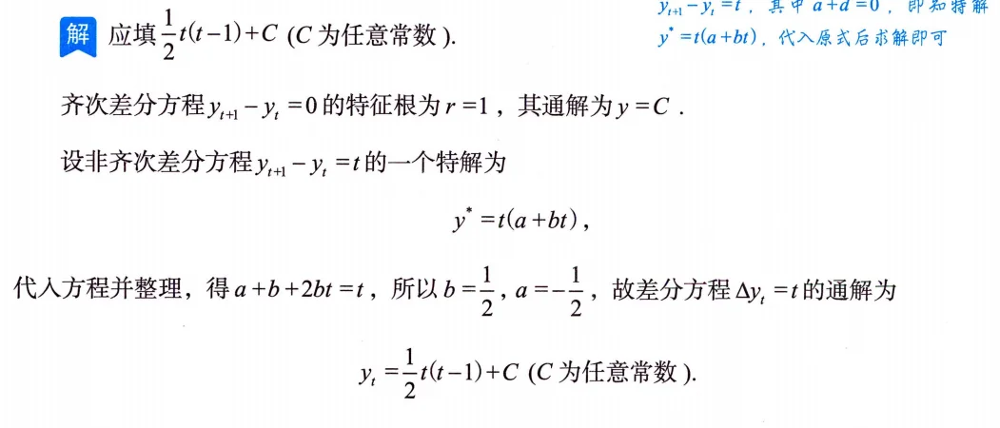
思路 \(\Delta y_t=t\) 即 \(y_{t+1}-y_t=t\)，求通解。这里 \(a=-1\)。齐次方程特征根 \(r=1\)，通解 \(y=C\)；右端 \(t\) 相当于表中 \(f(t)=d^tP_m(t)\) 取 \(d=1\)，\(a+d=0\)，特解要乘 \(t\)：设 \(y^*=t(a+bt)\)。 要点 代入 \(y^*_{t+1}-y^*_t=(t+1)[a+b(t+1)]-t(a+bt)=a+b+2bt\)，与 \(t\) 比较得 \(b=\dfrac12\)，\(a=-\dfrac12\)，通解 \(y_t=\dfrac12t(t-1)+C\)（\(C\) 为任意常数）。 注 「\(a+d=0\) 就乘 \(t\)」和微分方程里「重根就乘 \(x^k\)」是同一个思想，数三同学把这张表记熟即可。
例15.27 差分方程：三角型自由项（印P444–445）
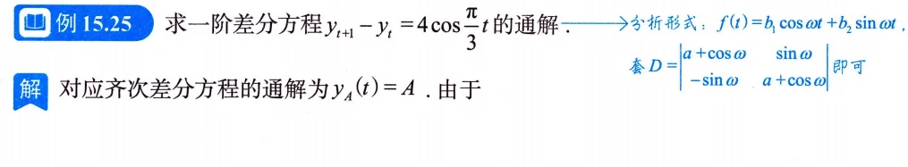
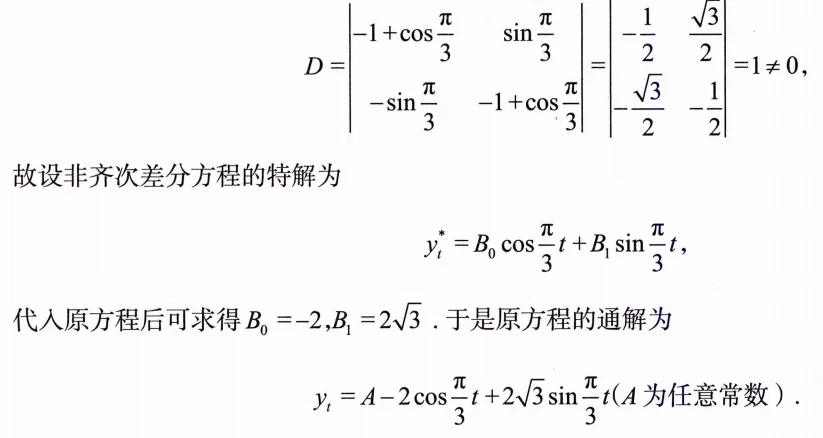
思路 求一阶差分方程 \(y_{t+1}-y_t=4\cos\dfrac{\pi}{3}t\) 的通解。分析形式：\(f(t)=b_1\cos\omega t+b_2\sin\omega t\)，套特解表里的 \(D\) 公式即可。 要点 \(a=-1\)，\(\omega=\dfrac{\pi}{3}\)：\(\cos\omega=\dfrac12\)，\(\sin\omega=\dfrac{\sqrt3}{2}\)，分母 \(D=(a+\cos\omega)^2+\sin^2\omega=\dfrac14+\dfrac34=1\neq0\)，不乘 \(t\)。设 \(y^*=B_1\cos\dfrac{\pi}{3}t+B_2\sin\dfrac{\pi}{3}t\)，代入解得 \(B_1=-2\)，\(B_2=2\sqrt3\)。齐次通解为 \(Y_t=C\)，故通解 \[y_t=C-2\cos\frac{\pi}{3}t+2\sqrt3\sin\frac{\pi}{3}t\quad(C\ \text{为任意常数}).\] 注 书中明说：这类三角型自由项「考频较低，考前记公式即可」（印P445）。
易错点与技巧
- 通解的常数要「独立」且个数等于阶数：\(C_1\sin x+C_2\cdot2\sin x\) 只算一个常数（印P421）。判独立最快的方法是看比值是不是常数。
- 通解里的常数未必取遍实数，如 \((1+x^2)(1+y^2)=Cx^2\) 中 \(C>0\)（印P421、423 注），概念题在这上面做过文章。
- 分离变量积分后常数写 \(\ln C\) 便于合并（印P423）。
- 除以含 \(y\)（或 \(p\)）的因式可能丢解：例 15.5 分离变量时默认 \(\sin u\neq-1\)，丢掉奇解 \(x+y+100=2k\pi-\frac\pi2\)；非线性方程全部解 = 通解 + 奇解，线性方程全部解 = 通解（印P424 注）。例 15.13 里约去 \(p\) 丢掉的常数解最终靠 \(y^3=Cx\) 取 \(C=0\) 补回（印P430）。
- \(y''=f(y,y')\) 型降阶，\(y''\) 必须写成 \(p\dfrac{dp}{dy}\)；写成 \(p'\) 就成了含 \(x,y,p\) 的方程，做不下去（印P429 注）。既缺 \(x\) 又缺 \(y\) 时按缺 \(y\) 处理（印P429）。
- 一阶线性公式里 \(e^{\int p(x)dx}\)：若 \(\int p\,dx=\ln|\varphi(x)|\)，结果可不加绝对值；其他场合 \(\ln u\) 不知正负一律加绝对值（印P425 注(2)）。
- 研究解的周期性、有界性、极限，优先把通解写成变限积分形式（印P425 注(3)，例 15.9、例 15.10）。
- 设非齐次特解前先「一看二算三比较」：拿自由项的 \(\alpha\)（或 \(\alpha\pm\beta i\)）与特征根比对定 \(k\)，忘乘 \(x^k\) 是高频错误（印P432–433）。三角型自由项即使只有 \(\cos\) 也要 \(\cos,\sin\) 两项都设。
- 反求参数题盯住「特解形状受自由项限制」：例 15.18 里自由项只有 \(e^x\)，特解中的 \(e^{2x}\) 只能来自齐次方程（印P438）。反求方程用四条注：\(x^{k-1}e^{rx}\Rightarrow r\) 至少 \(k\) 重；\(xe^{\alpha x}\cos\beta x\Rightarrow\alpha\pm\beta i\) 至少二重复根（印P438）。
- 物理应用翻译方程时盯紧符号：「温度变化率与温差成正比（\(T>T_0\)）」要写成 \(\dfrac{dT}{dt}=-k(T-T_0)\)，负号表示温度下降；比例系数 \(k\) 不是已知量，最后用初值表出（印P443 注）。
- 欧拉方程解完别忘 \(t=\ln x\) 回代（印P440）；追踪问题的切线方向翻译：追击点到被追击点的连线始终为该点切线方向（印P441 注）。
- 差分方程 \(f(t)=d^tP_m(t)\) 时看 \(a+d\) 是否为零决定乘不乘 \(t\)（印P444），与微分方程「重根乘 \(x^k\)」同源；三角型 \(D=0\) 才乘 \(t\)，考频低考前记公式（印P445）。
考点与方法补充（站注）
- 站注·真题大数据：一阶线性微分方程在近 15 年真题里属第一梯队（几乎每年必考），二阶常系数线性微分方程属第二梯队（15 年出现 10 次以上，高频非必考）。复习优先级就按这个排：先把一阶线性的通解公式与变限写法练到零失误，再攻二阶常系数的完整流程。
- 站注·高频题型：本讲真题的三大出题模式——「识别类型 → 套解法」的计算题、反求参数/反求方程、与几何物理背景结合的综合大题。对照原书：例 15.18/15.19 是反求系列的样本，例 15.21/15.22/15.23 是几何物理综合大题的样本。
- 站注：张宇强化 36 讲第 1 讲的主题是「判定类型，做好计算」——先判型后计算是贯穿其书系的思想；本讲的结构图把一阶方程求解直接标成「对号入座」（印P420），正文反复出现「换位思考」「套公式即可」的说法，就是这个思想的落地。计算能力靠动手：基础阶段「概念 + 基本计算」练扎实比多听课有用（张宇公开课/经验贴共识）。
- 站注·书系路线：《基础30讲》配《300题》用于基础阶段，强化阶段换《强化36讲》配《1000题》；本讲学完建议直接做习题 15.1–15.15（印P445–446），它们覆盖了全部题型。
- 站注·跨讲衔接：几何应用依赖第 5 讲的切线、截距、单调极值工具（例 15.6 的「截距 = 距离」、例 15.15 的极值条件翻译）；物理应用与第 7 讲的牛顿第二定律、相关变化率同源（例 15.22 的 \(v\dfrac{dv}{dx}\) 就是相关变化率的写法）。反过来，本讲的解给第 16 讲幂级数求和提供微分方程背景。
- 站注·卷面背景：数学一/三中高数占 56%、数学二占 78%（150 分卷、180 分钟）。本讲题型选择、填空、解答全都有（原书印P419 也是这么标的），属于「位置固定、套路稳定」的得分板块，性价比极高。
知识清单自测
自测题
1.（概念题，仿例 15.1）设 \(y=f(x)\) 是方程 \(y''-2y'+4y=0\) 的解，且 \(f(x_0)>0\)，\(f'(x_0)=0\)，判断 \(f(x)\) 在 \(x_0\) 处的极值情况。
查看答案
解 在方程中令 \(x=x_0\)：\(f''(x_0)=2f'(x_0)-4f(x_0)=-4f(x_0)<0\)。又 \(f'(x_0)=0\)，由判别极值的第二充分条件，\(x=x_0\) 是 \(f(x)\) 的极大值点。
2.（概念题，仿例 15.2）设 \(y=y(x)\) 是方程 \(y''+y'-2y=e^{3x}\) 满足 \(y(0)=y'(0)=0\) 的特解，求 \(\lim\limits_{x\to0}\dfrac{\ln(1+x^2)}{y(x)}\)。
查看答案
解 代 \(x=0\)：\(y''(0)+y'(0)-2y(0)=1\)，故 \(y''(0)=1\)。洛必达：
\[\lim_{x\to0}\frac{\ln(1+x^2)}{y(x)}=\lim_{x\to0}\frac{x^2}{y(x)}=\lim_{x\to0}\frac{2x}{y'(x)}=\lim_{x\to0}\frac{2}{y''(x)}=2.\]
3. 求微分方程 \(y''-4y=e^{2x}\) 的通解（习题 15.7）。
查看答案
解 特征方程 \(r^2-4=0\)，\(r_1=-2\)，\(r_2=2\)，齐次通解 \(Y=C_1e^{-2x}+C_2e^{2x}\)。自由项 \(\alpha=2\) 是单特征根，设 \(y^*=Axe^{2x}\)，代入方程得 \(4A=1\)，\(A=\dfrac14\)。故通解
\[y=C_1e^{-2x}+C_2e^{2x}+\frac14xe^{2x}.\]
4.（仅数学一、数学二）求微分方程 \(xy''+3y'=0\) 的通解（习题 15.6）。
查看答案
解 这是 \(y''=f(x,y')\) 型，令 \(p=y'\)，则 \(p'+\dfrac3x p=0\)，解得 \(p=Cx^{-3}\)。再积分
\[y=\int Cx^{-3}dx=C_1-\frac{C}{2}x^{-2}=C_1+\frac{C_2}{x^2}\quad(C_1,C_2\ \text{为任意常数}).\]
5.（仿例 15.19）已知某常系数齐次线性微分方程有特解 \(y_1(x)=e^{-x}\cos\sqrt3\,x\)，\(y_2(x)=x^2+1\)，且最高阶导数前的系数为 1，写出该方程（阶数由解确定）。
查看答案
解 有解 \(e^{-x}\cos\sqrt3 x\)，则 \(-1\pm\sqrt3\,i\) 是单复根；有解 \(x^2+1\)，则 \(1,x,x^2\) 都是解，\(r=0\) 至少三重根。特征方程为
\[\left[r-(-1+\sqrt3\,i)\right]\left[r-(-1-\sqrt3\,i)\right]\cdot r^3=(r^2+2r+4)r^3=r^5+2r^4+4r^3=0.\]
方程是五阶的（\(x^2\) 迫使 \(r=0\) 三重）：\(y^{(5)}+2y^{(4)}+4y^{(3)}=0\)。
6.（仅数学三）求差分方程 \(y_{t+1}-3y_t=2^t-1\) 满足 \(y_0=1\) 的特解（习题 15.15）。
查看答案
解 齐次方程 \(y_{t+1}-3y_t=0\) 的特征根 \(r=3\)，通解 \(Y_t=A\cdot 3^t\)。对 \(2^t\)（\(d=2\)，\(a+d=-1\neq0\)）设特解代入得 \(-2^t\)；对常数 \(-1\) 设特解代入得 \(\dfrac12\)。由叠加原理，通解 \(y_t=A\cdot3^t-2^t+\dfrac12\)。代入 \(y_0=1\)：\(A-\!1+\dfrac12=1\)，\(A=\dfrac32\)。故特解
\[y_t=\frac12\cdot 3^{t+1}-2^t+\frac12.\]